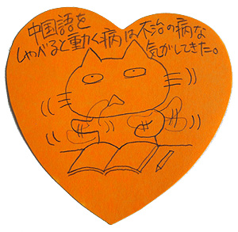
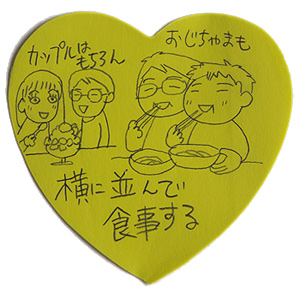
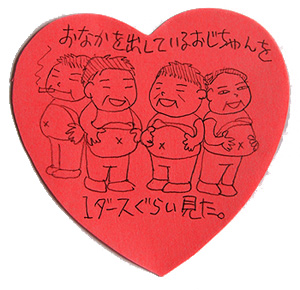
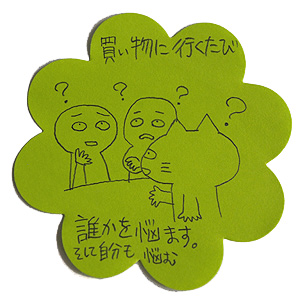
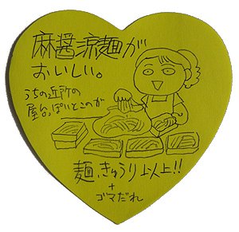

我最喜欢星期五的下课的时候。
因为以后的两天没上课！所以这个时候我跳出去学校。
我昨天下了课就百货商场去。
最近我想吃烤鱼。。我觉得在台湾的鱼烹饪是炸很多。
可是我想吃烤的！我两个月没吃烤鱼了！没有DHA！
所以我去了日本餐厅。
わたしは金曜日の下校時がいちばん好き！
だってこの後2日間学校ないから。そんなわけでこのときは学校を飛び出しちゃう
昨日は学校終わって、デパートに行ってきた。
最近むしょうに焼き魚が食べたかった…思うに台湾の魚料理は揚げてるのが多い
けど、私は焼いてるのが食べたい！
この2ヶ月焼き魚を食べてない！DHAが取れてない！
というわけで、日本料理屋に行ってみた。
我最喜欢星期五的下课的时候。
因为以后的两天没上课！所以这个时候我跳出去学校。
我昨天下了课就百货商场去。
最近我想吃烤鱼。。我觉得在台湾的鱼烹饪是炸很多。
可是我想吃烤的！我两个月没吃烤鱼了！没有DHA！
所以我去了日本餐厅。
わたしは金曜日の下校時がいちばん好き！
だってこの後2日間学校ないから。そんなわけでこのときは学校を飛び出しちゃう
昨日は学校終わって、デパートに行ってきた。
最近むしょうに焼き魚が食べたかった…思うに台湾の魚料理は揚げてるのが多い
けど、私は焼いてるのが食べたい！
この2ヶ月焼き魚を食べてない！DHAが取れてない！
というわけで、日本料理屋に行ってみた。
{kind=link}

热热的烤鱼…老板放在我前面了。 我实在感动！我的头里面跳舞！烤鱼的味道极好！ 我吃了烤鱼就百货商场出去以后，去茶店了。 あつあつの焼き魚…お店の人が私の目の前に置いていった… うーん感動！頭の中は跳ねている！焼き魚の風味最高！ 私は焼き魚を食べたあとデパートを出て、お茶屋さんに行った。{kind=link}

这家茶店是以前朋友给我介绍的。 我听说日本的有名人常常来了这家店， 店里面有有名人的照片。 老板会说日语而且很有意思。 老板给我好几种茶了。 什么种茶都很好喝。 今天我要买两种茶[金萱茶][茉莉花茶] このお茶屋さんは前に友だちに紹介してもらったとこ。 聞くところによると日本の有名人がいつも来るお店らしい。 お店の中には有名人の写真がある。 店長さんは日本語がしゃべれる上に、面白い。 店長さんに色々とお茶をいただいた。 どの種類のお茶も美味しい！ 今日は[金萱茶][茉莉花茶]の2種類を買った。{kind=link}

喝了太多茶以后，我去了故宫博物院。 因为夏天的从星期1到星期5入场券五折！[四点以后] 我最喜欢看古董的盘。 我看到六点半。 たくさんお茶を飲んだあと、故宮博物館に向かった。 というのも夏の月曜から金曜は入場料が半額なのだ（4時以降） 私は骨董の皿を見るのが大好き！ 6時半まで鑑賞した。{kind=link}

我坐公共汽车到士林夜市去了。 バスに乗って士林夜市に移動。 星期5的夜市有很多人。 最近我喜欢的小吃在这里。 上个星期我买这个小吃的时候，我听不懂老板的说话。 可是老板对我很好。 他对我教带去的办法了。 金曜の夜市は人の出がすごい！ 最近私が好きな屋台料理がここにある。 先週その料理を買ったとき、私はお店の人が言っていることが判らなかった。 けど、お店の人はとっても親切だった。 私に持って帰りかたを教えてくれた。{kind=link}

昨天我也要买这个小吃。 我觉得。。。上个星期的事情他忘了。 昨日、またその料理を買いに行ってみた。 けど、先週のことは忘れているだろうなぁ…って思ってた。 可是！老板记得了！ 见到的时候，他跟我说[好吃吗？] 我说[好吃！非常好吃！] 老板跟我笑笑。 老板。。。台湾人都对我很好！ 你昨天看到跳舞人？ 这个人是我。 けど！お店のひと覚えてた！ 会ったとき、彼は私にこう言った「おいしかったー？」 「おいしかった！とってもおいしかったー！」 お互いに笑っちゃった。 お店の人…台湾の人はみんな私にやさしい！ あなたは昨日踊っている人をみませんでしたか？ それは私です。